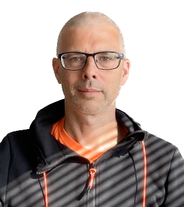

Language is really pretty wild, when you think about it. By making sounds with our mouths, gesturing with out hands, or just making marks on paper, we are able share all sorts of thoughts and ideas, from the utterly mundane to the ineffably sublime. Ok, maybe not the ineffably sublime, because the whole point of something being ineffable is that we can't eff it. But you know what I mean. At least we have a word for describing the things that we can't describe.
So we have established that language itself is pretty great. But in my research, I want to learn about all the stuff surrounding language. Things like how the way something is said can be at least as important as what is said. How the call-and-response game of passing bits of language back and forth in conversation works, and how it can be that looking at printed text can evoke whole worlds on our heads. Not least, I want to learn about how all of these things are affected by neurodivesity.
At least, those are the high-level goals. It is important to keep an eye on the horizon. Day to day, I just try to make progress on my research, and be a good teacher for the students at the Department of Linguistics, Cognitive Science and Semiotics, at Aarhus University where I am Associate Professor.
I started "translating" Danielle Navarro's wonderful Learning Statistics with R to Python back in like 2019 or something. I've gotten such a great response, that I really should get around to finishing it some day. But a project like this is never really done, is it? Anyway, please check it out, use it if you like it, and submit your issues and/or pull requests. I swear I'll get to them some day!